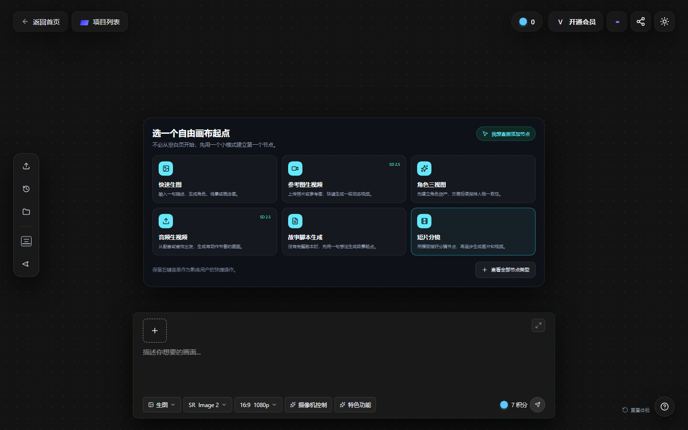

先把产出格式约束住
围绕角色文档和图片提示词搭建 Skill；从实际生成中发现双语输出与成品边界问题。
业务一端是把剧本与角色素材转成可互动的 AIBOT，另一端是让创作者理解并使用 Canvas。我经常站在流程中间：自己先走一遍，找出卡点，再把经验转成可讨论的问题、可体验的方案和可复用的规则。
从教程难找、操作无提示，到起步路径的重新组织。
结构化反馈 + 引导原型 ↘ 02不只写生成步骤，也写审核、测试和正式配置的边界。
制作 SOP + 新人导引 ↘ 03从一键生成的期待，走向分阶段辅助与人工确认。
Skill 试用与迭代 ↘先看问题和取舍，再看实现与失败。历史工作依据原始存档；选型分析是本次复盘补充；20 条评估用例是本次新设计、尚未运行模型评测。三者不混写成同一阶段的成果。
直接看质量标准与测试设计 ↘产品体验反馈 · 竞品观察 · 新手路径与 HTML 原型
一位使用过其他 AI 创作工具的客户，仍然需要 Canvas 的完整操作培训；而我初次接触节点画布，只想先做一张图或一段图生视频。这不是同一种任务，也不应该被推入同一条完整短剧流程。
教程放在自动轮播 Banner 里，切走后不容易再找到；画布缺少「右键创建节点」的提示。
教程存在，不代表用户能在需要时找到它。
把帮助内容从「偶然看见」改为随时可达的固定入口。
在创建节点、查看结果等当下步骤给提示，而不是让用户通读文档。
完整短剧保留流程引导；单点生成提供轻量起步路径，并允许跳过。
早期原型尝试按任务增加多个首屏按钮。查看后，我发现其中几个最终都通向自由画布，「示例」也与一键短剧重叠。于是保留原有两类模式，将具体任务放进自由画布内部；一键短剧则把「可以使用示例剧本」说清楚。
竞品调研提供了任务分流、跟练、可复制教学画布等方向，但我没有把这些能力全部叠上去。这个阶段更需要减少重复选择，保留熟练用户的自由操作。
先完成一次单点生成，再按需要探索节点；不必先准备完整剧本。

整理实际反馈、比较竞品起步方式，提供业务逻辑和修改要求，评审 AI 实现的页面并收敛入口。
已交付反馈与优化建议、方案说明、HTML 交互原型及 Banner 原型。本案例的交付范围是方案与原型，后续仍需正式开发与任务测试验证。
教程难找和入口重复，优先靠信息层级、固定入口和清晰提示解决。AI 辅助实现原型，不等于产品需要用模型替用户决定创作目标。验证应看用户能否选对路径、找到下一步，而不是模型生成得是否流畅。
制作流程归纳 · 双重审核 · 测试与正式环境检查
在实际跟做角色、熟悉团队既有规范后，我将制作过程整理成新人可以查阅的 SOP。AI 帮我搭建文档框架，我负责补齐真实操作、截图、字段和风险提示，再组织成新人导引与资料索引。
按世界观归档剧本、角色参考图，区分文字和图片输入。
文字、图片分支处理，人工检查设定与画面适配。
先自审，再提交负责人；通过后进入测试配置。
实聊测试、跨端检查，再配置正式环境并登记 ID。
检查世界书与好感度绑定，实际对话验证角色表现，再用手机确认背景的裁切与显示。
按 SOP 配置后保持下架，等待统一安排。两套后台外观接近，因此把环境辨识与状态检查写成明确关口。
图片比例正确，也可能在手机端被截掉；内容审核通过，也可能绑定错世界书；表格里填「已完成」，也不代表角色已经对用户开放。SOP 的价值，是把这些状态区别写清楚，让交付能被核对，而不是依赖口头提醒。
将亲身制作经验与团队规范整理为完整步骤，补充审核责任、环境状态、跨端检查与角色 ID 追踪。
交付完整 SOP，供新人带教与同类制作任务查阅，继续整理新人导引及资料索引；未对培训耗时和错误率做量化测量。
输入约束 · 输出边界 · 实际试用反馈驱动的迭代
初代 Skill 希望把剧本处理成可交付的角色文档。但在试用中，「能生成」与「同事能省心地使用」之间出现了距离：中英文输出不符合要求、审查信息混入成品，以及新人觉得改动成本仍然偏高。
剧本之间人物关系和表达方式不同，拆解、候选视角和语言改写适合让 AI 辅助；文件语言、必填字段、环境状态和审核权限则需要明确规则。目标不是让 AI 包办一切，而是减少重复整理，同时不把关键业务判断交出去。
| 做法 | 适合什么 / 为什么这样取舍 |
|---|---|
| 单次 Prompt | 适合一次性的明确任务；但每次重述规则、共享版本和核对成品都依赖个人习惯。 |
| Skill + 分阶段辅助 | 保留可复用约束与材料处理顺序，在不确定的位置停下来。实际工作中做过制作、试用和迭代，并不等于底层模型经过专门训练。 |
| SOP + 人工检查 | 固定操作与审核责任用检查清单表达。后台配置、环境切换和最终发布不交给模型自行决定。 |
| 更复杂的系统 | 没有材料支持已实现 RAG、模型微调或多 Agent 自动化。本案例不补写这些架构；下一步先验证现有输入、输出和确认关口。 |
围绕角色文档和图片提示词搭建 Skill；从实际生成中发现双语输出与成品边界问题。
新人反馈修改仍然费力，于是调整为 Brief、代入视角建议、审查三种辅助模式，把关键选择交还给人。
再加入最终文档生成，形成四模式总入口，避免同事在两套 Skill 间切换。保留人工确认和最终审核。
当前停在视角确认：先判断用户扮演谁、与角色是什么关系，再生成正式文档。
输入需要说明材料、角色和用户关系；过程中需要确认门槛；输出要把审查意见与最终交付分开。对话测试暴露的问题，再回到规则和措辞里修改。
角色是否符合原剧情、用户代入是否合理、语气是否稳定、生成图是否适配场景，都需要人工对照材料与实际测试。工具不能替负责人决定审核通过，也不能自行公开角色。
以下是历史反馈与迭代记录可支持的问题。原因栏是本次复盘分析，不把可能机制当作已定位的模型内部原因；改了规则，也不等于已经证明问题消失。
当时有实际试用和审核，但没有找到完整评测集。本次补充一份可执行的评估方案，用于说明下一轮怎样验证，不补造历史分数。
| 维度 | 看什么证据 |
|---|---|
| 素材忠实度 | 关键关系与剧情事实能对应输入；缺失信息要说明，不把续写当作原剧情。 |
| 代入视角一致性 | 用户身份、角色称呼、关系和可知信息符合已确认的视角与互动时点。 |
| 双语交付契约 | 文件分开、字段完整、双语关键事实一致，审查意见不进入成品。 |
| 模式与确认关口 | 材料与显式指令冲突时可解释；关键条件不清时不直接生成或发布。 |
| 人工返工与可用性 | 记录必须修改的字段、修改原因和时间；看接手者能否完成任务，不只看语言流畅。 |
每维可记 0「不可用」、1「需修改」、2「可用」，同时保留判断理由。关键事实无依据、必要确认被跳过、交付语言或文件缺失、越过发布权限，均应拦截；不能用平均分掩盖关键错误。这里定义的是规则，不是已经取得的评分结果。
配有完整自制短剧、双语草稿、虚构平台约束及固定提示词，点开每条即可查阅。它们不是原始商业剧本或用户原话；类别参考历史失败与版本问题，覆盖正常输入、缺失材料、视角、交付、路由和版本。
20 条设计用例 · 尚未运行模型评测
固定模型、参数与输入，同一套用例对照不同版本，独立保留原始输出。相同输入重复运行，观察稳定性；人工按同一标准记录具体修改，而不是只写「优化了 Prompt」。
用例 ID → 输入与版本 → 实际输出 → 评分及理由 → 人工修改 → 再次结果。耗时和成本只有实测后才填写；20 条小样本用于找问题，不外推整体准确率。
本页的路径切换与确认框是规则示意，不运行模型；网页功能测试不等于 AI 输出质量评测。目前不展示准确率、通过率或收益曲线。
转译实际制作需求，设定输入与交付约束，依据试用问题调整模式、确认门槛和审查逻辑，组织 AI 辅助编排 Skill。
完成初代 Skill 制作、实际试用及四模式总入口迭代，围绕输出边界和人工确认持续调整。最终版持续采用与量化收益没有完整跟踪记录。
AI 互动角色 · 团队模式测试 · 内容运营
参与多个短剧项目的 AIBOT 资料整理、角色卡与世界书制作、图片筛选、对话测试和后台配置。重点看用户以什么身份进入、角色知道什么、关系如何推进，以及回复有没有偏离设定。
AI 辅助草拟角色文档与图像提示词，我负责材料约束、选稿修改和实际测试。配置完成与公开发布分开记录，不把所有角色统称为已上线。
团队模式资料与测试反馈中，我整理了三个具体问题：移除成员前如何批量交接资产；权限不足时如何给出可执行的下一步；消息如何支持批量已读处理。
同时参与团队模式使用指南的编写与完善，有分角色录屏及反馈文档存档。本地未恢复到完整指南正文，因此不将其包装成已核验的发布成果。
点击「取消固定」后，导览没有立即收起。
需要鼠标移开标签后才消失，新手容易误以为关不掉。
点击后立即给出收起反馈，让动作与结果对应。
此外，我也参与竞品与卡包调研、故事内容改写、产品更新通知和中英文传播材料制作。这些工作共同训练了同一件事：先理解用户处于什么情境，再决定该给什么信息。
| 分工 | 具体承担 |
|---|---|
| 我 | 亲身体验、问题定义、业务约束、方案比较、原型评审、结果筛选、测试和文档交接。 |
| AI 与工具 | 资料整理、候选内容、文档框架、图像提示词、HTML 实现与 Skill 编排。 |
| 负责人及协作同事 | 提供业务标准、带教与试用反馈，审核内容、协调上线；产品与研发负责正式实现和发布。 |
这段实习让我更确信：
我擅长的不是「让 AI 多产出一点」，而是找到值得解决的问题，把任务拆到可执行、可检查、可交接。
先实际走流程，用现象和影响描述问题；比较方案时主动做减法；把依赖经验的规则写进流程；用真实试用纠正对自动化的预期。
若继续推进，我会记录新用户首个任务完成情况、SOP 高发返工点、Skill 每阶段的人工修改原因。这些是后续验证计划，不是本次已经实现的指标。
本页基于原始工作文档、HTML、Skill 文件及历史迭代记录整理。展示的是个人贡献与方法，不公开公司后台、内部链接或原始业务配置。
对应产品体验反馈、Canvas 新手导引与竞品观察材料、入口优化方案，以及 8 月 26—27 日的原型修改记录。两张截图均来自本地保存的《StoReel-Canvas-新手引导原型.html》实际页面。
历史记录可定位从多入口收敛为两模式的判断；HTML 是方案交付，不代表正式产品已完成开发。
SOP 正文包含输入归档、自审与负责人审核、世界书绑定、测试上架、正式下架、跨端检查和 ID 登记。Skill 对照了 8 月 5 日、12 日、17 日的制作与试用反馈记录，并恢复到四模式文件的历史快照。
角色项目存在部分剧本、角色文档、世界书、测试及配置记录，但各项目证据完整程度不同；本页不使用无法闭环的上线数量、销量或提效指标。
团队模式反馈 PDF 及分角色录屏可以定位，完整指南正文未找到。SOP 的新人使用情况依据本人工作记录，不冒充第三方测评。
本次借鉴用户提供的 AI PM 作品集方法图，补充问题—选型—实现—评估—失败—迭代的论证。方案比较、评分维度、20 条构造用例和 R01 的冲突确认策略属于本次复盘设计，不是新发现的历史交付。
页面中的流程演示不连接产品后台，不提供模型输出。完整证据索引、未核实项与差异保留在内部复盘稿中，不作为公开业务附件。